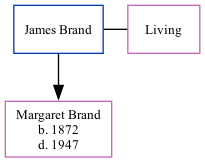

James Brand
[ Home ] | [ Calendar ] | [ Surnames Index ] | [ Family History ]James Brand and married Isabella J N Myers (with whom he had 1 child, Margaret Jane M, ) in South Shields, Tyne and Wear, England around Nov 18671.
Children
- Margaret Jane M was born in 1872
Citations
- England & Wales Marriages 1837-2005 - Findmypast
Family Tree

Interactive Map
Map
Generated by ged2site. Last updated on Feb 18, 2025